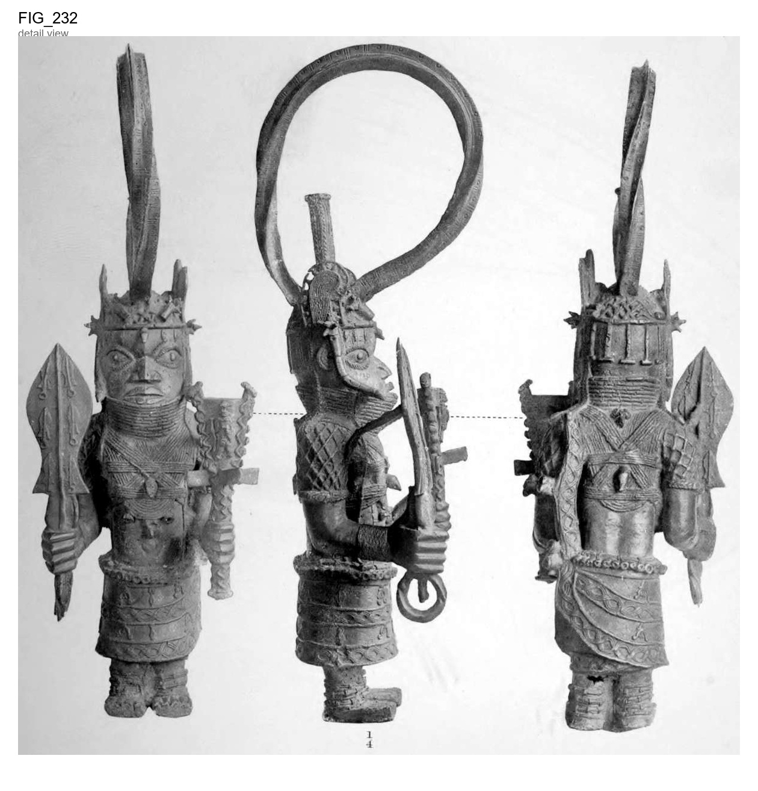

Bronze statuette, representing a figure standing ; with broad leaf- shaped sword, similar
Bronze statuette, representing a figure standing ; with broad leaf- shaped sword, similar to Figs. 326, 327, 328 and 329, having a twisted ring pommel in right hand, and a sistrum in left hand. Three tribal marks over each eye. Coral choker, badge of Agate head-dress, similar to rank. Fig. 121, Plate XXI, and curved agate joendants on each side. A large twisted ring rises out of the head-dress, which looks as if intended to enclose some thick band of cloth or other substance to suspend it. The crown of the head-dress terminates in a thick cylindrical spike with a flat top, like Fig. Ill, Plate XIX, Fig. 155, Plate XXV, and Figs. 167 and 168, Plate XXVI. The sistrum is ornamented with a full-length human figure, holding a staff in right hand and the so-called key or axe in left hand. Beneath the bowl of the sistrum are three projecting cruciform bars, and the upper edge of the bowl is ornamented on each side with two heads very Dr. Felix Roth, in the "Halifax Naturalist," June, 1898, rudely cast, p. 33, speaks of these projecting prongs as being used for killing victims for sacrificial purposes, but the fact of their being sistri is shown in connec- tion with Fig. 181, Plate XXVII. bowl of the sistrum. with small imitations of itself. Sinuous serpents cover the shaft and The leaf-shaped sword is ornamented, front and back, The figure has bands, probably of coral, The skirt is ornamented with conventionalized coral anklets. crossing on the breast. human heads with long hair and rows of guilloche pattern. Ankles have The skirt is bound up in the usual manner in a band behind There is a band of small bells round the hips, and a This figure was obtained the left shoulder. human head and a bunch of bells on the left side. from the Liverpool Museum, in the report of which it described and figured with three others like it. " Bulletin of the Liverpool is elaborately Museums," Vol. I, No. 2, p. 59. Museum. It is of considerable weight, being cast solid. There is a figure like this in the British CO 111 H < Q. Antique Works of Art from Benin. 63